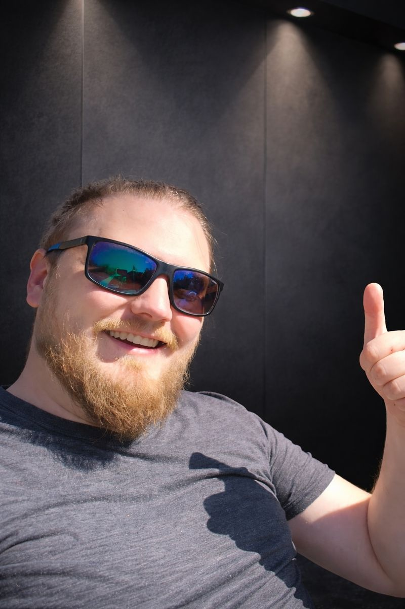

Van complexe technologie naar heldere praktijk.
Leren werken met Microsoft-technologie, met vertrouwen.

Over mij
Trainer, teamlead en Microsoft-specialist.
Microsoft Certified Trainer en teamlead bij BoostMeUp, met ervaring in Microsoft 365, Azure, Intune, Copilot en PowerShell.
500+opgeleide mensen
4,5/5gemiddelde tevredenheid
Leeromgeving
Leer Microsoft als sysadmin.
Tools, oefeningen en leerpaden voor Microsoft 365, Intune, Azure en Network.
Microsoft 365
Rollen, rechten en examenvragen.
Intune
Oefenen met endpoint management.
Azure
Fundamentals en herhalingsoefeningen.
Network
Praktisch oefenen met netwerkinfrastructuur.
Blog
Mijn blog over technologie, training en leren.
Artikels over Microsoft-technologie, didactiek en praktische lessen uit trainingen.
Laatste artikel
Bekijk de blog →Contact